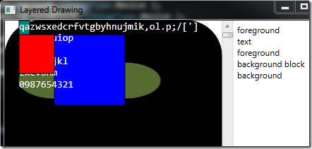
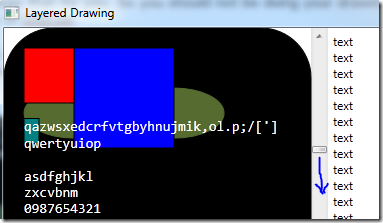

WPF Layered Drawing
WPF Layered Drawing
This post demonstrates a simple way to draw in WPF using multiple layers. The layered drawing classes are less than 100 lines in total and fairly simple. Below I’ll describe the demo app, layered drawing and then how the code for the layered drawing works.
Retained mode drawing
Drawing in WPF is very different from drawing in windows forms. Drawing in windows forms is done in immediate mode, drawing in WPF is done in retained mode. What this means is that in WPF once you have drawn a visual that visual knows how to redraw itself. You don’t need to redraw it every time some part of the display changes, WPF does it for you. You should not be doing your drawing in OnRender, the WPF equivalent of OnDraw, rather you should be drawing visuals that are then only redrawn when required.
As a practical example of how this makes things easier consider an application that draws graphics in multiple layers. In the application shown below there are multiple layers; one for the text, one for the background etc.

Scrolling moves the text up/down

Since each element is drawn in a separate layer, to move the the text down all you do is redraw the text layer. All the other layers remain unchanged and thus don’t need to be redrawn manually.
Drawing on the layers
The layered drawing classes presented here make it easy to create a UI like this. Here is an example of creating a layer
1: m_layers.AddLayer( 10, DrawBackground, ChangeType.Resize );
Here a layer is created. Its priority (discussed later) is set to 10. DrawBackground is the method responsible for drawing the layer being registered. Resize is the ChangeType that will cause the layer to be redrawn.
Here is the DrawBackground method
private void DrawBackground( DrawingContext ctx )
{
var pen = new Pen( Brushes.Black, 1 );
var rect = new Rect( 0, 0, m_layers.ActualWidth, m_layers.ActualHeight );
ctx.DrawRoundedRectangle( Brushes.Black, pen, rect, 50, 50 );Now that that is in place having the layer redrawn when the window resized is easy
protected override void OnRenderSizeChanged( SizeChangedInfo sizeInfo )
{
base.OnRenderSizeChanged( sizeInfo );
Draw( ChangeType.Resize );
}What you need to do is call the Draw method with the appropriate ChangeType, here ChangeType.Resize.
The layer registration and change notification scheme allows you to decouple the drawing logic from the events that cause changes to the UI. So should you later want to add another layer that is also redrawn when the window is resized, then you just add a new layer registration. The code in the OnRenderSizeChanged method does not change at all. In a real application you would use this separation to keep the events and drawing logic separate (model vs view or separate layers managed by different classes)
To complete the discussion of the demo application here is the full layer registration
private void OnLoaded( object sender, RoutedEventArgs e )
{
m_layers.AddLayer( 10, DrawBackground, ChangeType.Resize );
m_layers.AddLayer( 11, DrawBackgroundBlock );
m_layers.AddLayer( 20, DrawStaticForeground );
m_layers.AddLayer( 21, DrawText, ChangeType.Scroll );
m_layers.AddLayer( 30, DrawForeground );And here is the OnScroll handler.
And that is it. Using layers like this is pretty simple and it is very efficient as is uses DrawingVisuals. Drawing in this manner can be used for many purposes, for example to build a text editor control. You could have a layer for the text, one for the gutters & margins and one for the selection highlight.
The source code for the demo app is attached. Hopefully you will find this method useful.
Below is a description of how the layered drawing is implemented.
Implementation
The ChangeType enum is used to describe different types of changes. The exact values used would depend on your application.
The WpfLayerInfo class stores the details for each layer.
public class WpfLayerInfo
{
public WpfLayerInfo( int priority, Action<DrawingContext> draw, DrawingVisual visual, ChangeType notifyOnChange )
{
NotifyOnChange = notifyOnChange;
Priority = priority;
Visual = visual;
Draw = draw;
}
public ChangeType NotifyOnChange { get; private set; }
public int Priority { get; private set; }
public DrawingVisual Visual { get; private set; }
public Action<DrawingContext> Draw { get; private set; }
}Layers in WPF
Building the layers in WPF is relatively strait forward. Each layer is a [DrawingVisual][3] and the layers are contained in a FrameworkElement user control. You then override the GetVisualChild() method to return a layer’s visual.
public class WpfLayers : FrameworkElement
{
private readonly VisualCollection m_children;
private readonly List<WpfLayerInfo> m_layers = new List<WpfLayerInfo>();
public WpfLayers()
{
m_children = new VisualCollection( this );
}
public void AddLayer( ... )
{
var drawingVisual = new DrawingVisual();
...
m_children.Add( l.Visual );
}
protected override int VisualChildrenCount
{
get { return m_children.Count; }
}
protected override Visual GetVisualChild( int index )
{
if( index < 0 || index >= m_children.Count )
{
throw new ArgumentOutOfRangeException( "index" );
}
return m_children[index];
}
}The code above illustrates the main points, there is a FrameworkElement with a VisualCollection (m_children) containing DrawingVisuals. Each DrawingVisual represents a layer. m_layers is a list of WpfLayerInfo objects each describing a layer.
Adding a layer is handled by the AddLayer method
public void AddLayer( int priority, Action<DrawingContext> draw, ChangeType notifyOnChange = ChangeType.Redraw )
{
var drawingVisual = new DrawingVisual();
var layerInfo = new WpfLayerInfo( priority, draw, drawingVisual, notifyOnChange );
m_layers.Add( layerInfo );
//Sort the layers by priority
m_layers.Sort( ( x, y ) => x.Priority.CompareTo( y.Priority ) );
//Remove all the visual layers and add them in order
m_children.Clear();
m_layers.ForEach( l => m_children.Add( l.Visual ) );
}This method creates a new DrawingVisual and a WpfLayerInfo for the new layer. The visuals are then added to the VisualCollection in order of priority. I.e lowest priority at the bottom of the Z-order.
The Draw method which controls what layers will be redrawn
public void Draw( ChangeType change )
{
var affected = from l in m_layers
where ((change & ChangeType.Redraw) != 0) || ((l.NotifyOnChange & change) != 0)
orderby l.Priority
select l;
foreach( WpfLayerInfo layer in affected )
{
DrawingContext ctx = layer.Visual.RenderOpen();
layer.Draw( ctx );
ctx.Close();
}
}This method first gets the layers that need to be redrawn (lines 3 to 6) ordered by priority. ChangeType.Redraw is treated as a special case, if it is selected then all layers are selected (i.e. to be redrawn)
Next for each selected layer a DrawingContext is created and passed to the layer’s draw method.
The Demo
The XAML for the demo looks like this
<Window x:Class="LayeredDrawingDemo.MainWindow"
xmlns="http://schemas.microsoft.com/winfx/2006/xaml/presentation"
xmlns:x="http://schemas.microsoft.com/winfx/2006/xaml"
xmlns:LayeredDrawingDemo="clr-namespace:LayeredDrawingDemo"
Title="Layered Drawing"
Loaded="OnLoaded"
Height="350"
Width="500">
<DockPanel LastChildFill="true">
<TextBlock Name="m_log" DockPanel.Dock="Right" Width="150" Margin="5"/>
<ScrollBar Name="m_scroll" DockPanel.Dock="Right" Scroll="OnScroll" />
<LayeredDrawingDemo:WpfLayers x:Name="m_layers" DockPanel.Dock="Left"></LayeredDrawingDemo:WpfLayers>
</DockPanel>
</Window>The layers are added on line 12.
As shown above the OnLoad handler creates the layers and redraws all layers
private void OnLoaded( object sender, RoutedEventArgs e )
{
m_layers.AddLayer( 10, DrawBackground, ChangeType.Resize );
m_layers.AddLayer( 11, DrawBackgroundBlock );
m_layers.AddLayer( 20, DrawStaticForeground );
m_layers.AddLayer( 21, DrawText, ChangeType.Scroll );
m_layers.AddLayer( 30, DrawForeground );
Draw( ChangeType.Redraw );
}The window resize handler which causes the DrawBackground method to be called (ChangeType.Resize)
protected override void OnRenderSizeChanged( SizeChangedInfo sizeInfo )
{
base.OnRenderSizeChanged( sizeInfo );
m_scroll.Minimum = 0;
m_scroll.Maximum = m_layers.ActualHeight - 70;
Draw( ChangeType.Resize );
}The scroll handler
The Draw() method
One of he draw methods
private void DrawForeground( DrawingContext ctx )
{
var pen = new Pen( Brushes.Black, 1 );
var rect = new Rect( 20, 20, 50, 55 );
ctx.DrawRectangle( Brushes.Red, pen, rect );
Log( "foreground" );
}Notice that each of the draw methods in this example log that they have been called. This makes it easy to see from the demo UI which layers are being changes. E.g. when you resize the window you will see that the text is not redrawn etc.
The source code for the example is available on github. Hopefully you will find this method of drawing in WPF as useful as I have.